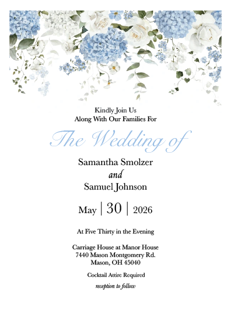
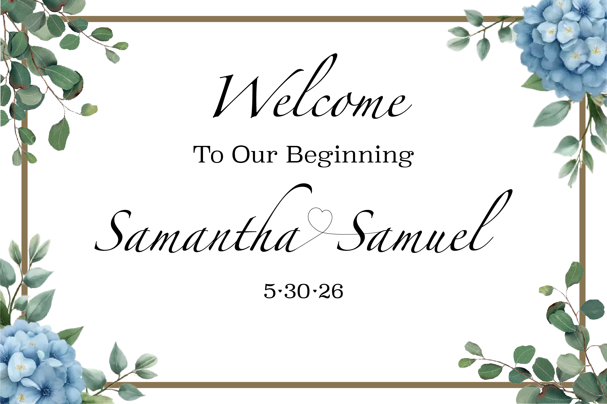
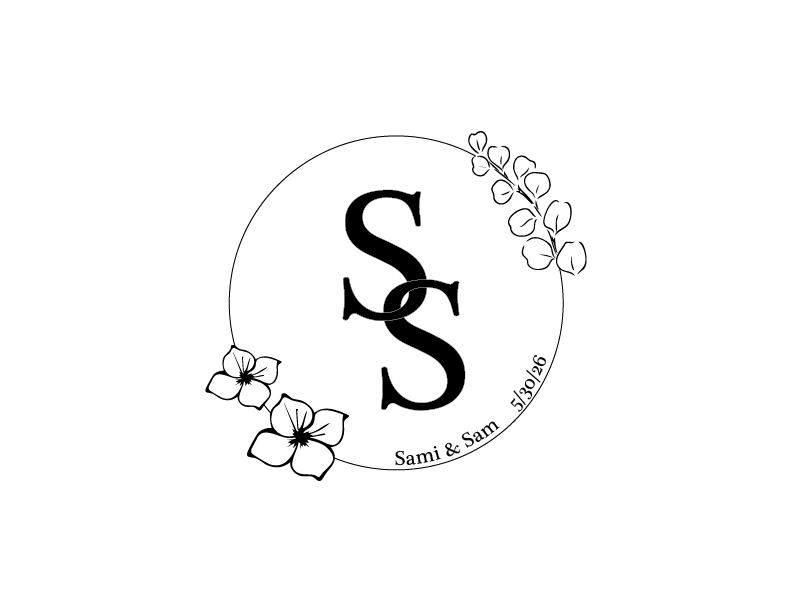
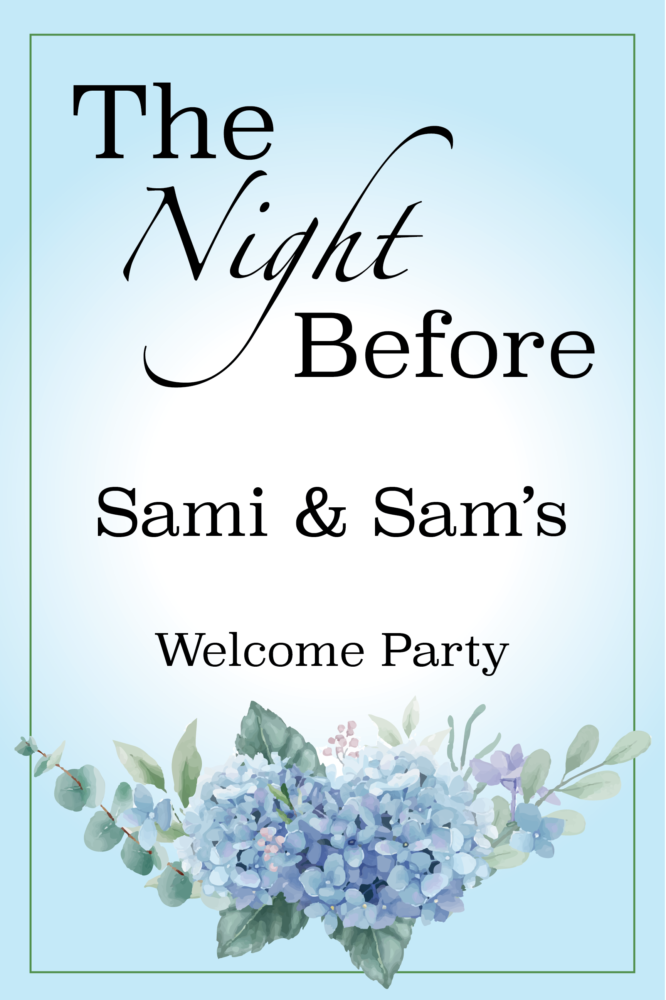

This is a project I did for my sister. She got married in May of 2026 and asked me to design her invitations. It eventually evolved into me making almost everything, because I was able to recreate anything she wanted. It gave me a lot of experience in working with a client's vision. There were many more designs I made, but here's a select few. These were all made in Illustrator.




A design of opposites and balance. I wanted both sides to mirror each other, having symetry, while also being the opposite of what was on the other side. The only requirement was that the artboard had to be 4x5 inches. Due the file being so small, the quality here isn't the best and for that I apologize. Made in Illustrator.
A collection of hands, all traced in one continuious line, layed out to make spaces. The spaces are filled with origional designs and patterns. I learned how to make an appealing layout, and how to create many different designs and patterns. Made in Illustrator.
A design of a flyer, of my choosing. I used a company I made up, and designed a flier for an event they would hold. I had to demonstrate hierarchy and a few different skills in InDesign. Made in InDesign.